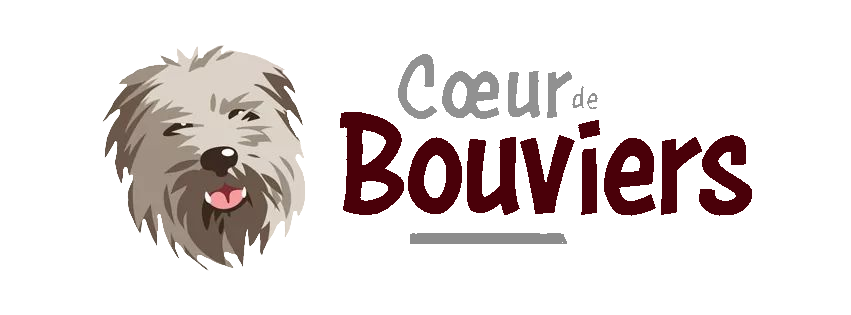

<header [ngClass]="{ transparent: isHomePage && !hasScrolled }">
    <app-sidenav [(isOpen)]="isNavOpen"></app-sidenav>
    <div class="container">
        <button class="sidenav-open" (click)="openNav()">
            <fa-icon [icon]="open"></fa-icon>
        </button>
        <a id="logo" routerLink="/">
            <div>
                
            </div>
        </a>
        <nav class="desktop-nav">
            <ul>
                <li
                        routerLinkActive="active"
                        [routerLinkActiveOptions]="{ exact: true }"
                >
                    <a routerLink="/">Accueil</a>
                </li>
                <li routerLinkActive="active"><a routerLink="/animaux">Animaux</a></li>
                <li routerLinkActive="active"><a routerLink="/evenements">Évènements</a></li>
                <li routerLinkActive="active">
                    <a routerLink="/contact">
                        Contact
                    </a>
                </li>
                <li routerLinkActive="active"><a routerLink="/don">Faire un don</a></li>
            </ul>
        </nav>
    </div>
</header>
<div [ngClass]="{ padding: !isHomePage }"></div>
